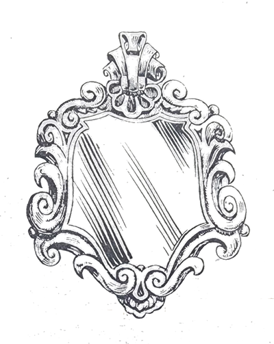
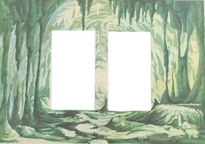
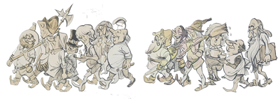
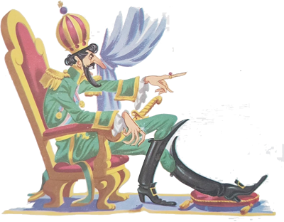
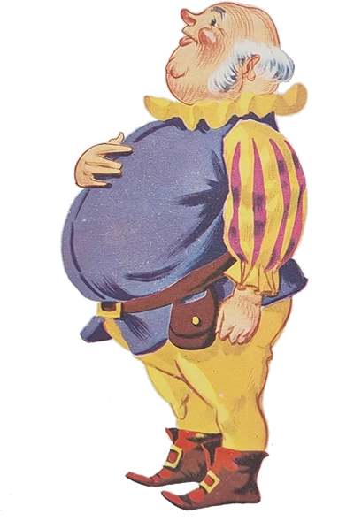
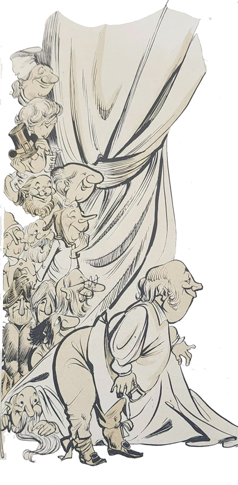
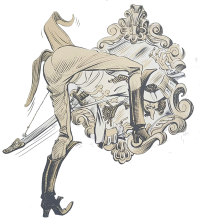
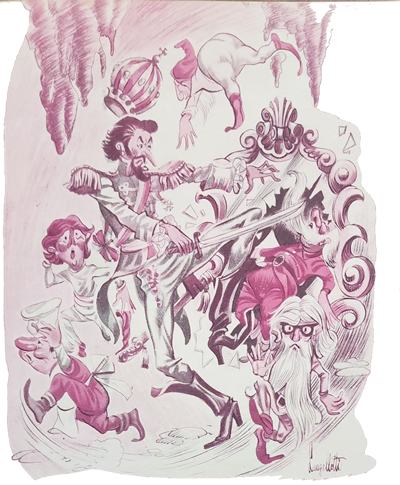

Não tem dúvida de que é mesmo fantástica! – disse o Arrelia aos seus admirados companheirinhos.
Estavam sentados num dos salões da Gruta de Maquiné, descansando um pouco, e não conseguiam reprimir sua surpresa diante das maravilhas que haviam encontrado em cada canto.
- Esta gruta é a mais linda do mundo! – esclareceu o Arrelia. E como é grande! Tem quase quinhentos metros de extensão.
- Cada coisa que tem aqui! – disse Iberê, olhando demoradamente para as estranhas formas que revestem o salão. Parece que tudo isso foi feito por artistas, não é mesmo?
- E na “verdade” foi um artista que executou todo esse trabalho – afirmou o Arrelia.
As crianças olharam uma para outra, sem compreender.
- Não sabem qual foi o artista? – perguntou ele.
Elas sacudiram a cabeça negativamente.

- O tempo! O Tempo! – ele esclareceu. Esse artista que a tudo transforma com uma paciência infinita! É uma “felicidaude” a gente estar num lugar assim. Já pensaram como isto é antigo? Tem milhões de anos!
- Quem foi que descobriu esta gruta? Você sabe, Arrelia? – perguntou Jaci.
- Sei, como não? Você está pensando que sou algum burro? Foi o explorador dinamarquês Peter Lund, em 1834 ou 1835. Ele encontrou restos de aves e de animais muito antigos, por certo pré-históricos, aqui dentro. Vocês já pensaram que fascinante?
- O que me deixa espantada são as formas que a gente vê! – exclamou a menina.
- De fato – concordou o Arrelia. E essas formas receberam o nome do que representam: Castelo das Fadas, Morcego, Águia, Elefante, Chuva de Prata e outros.
- E esses reflexos que vem das paredes? – disse Sérgio. A gente acredita que está num mundo diferente, feito de pedaços de espelho.

- Puxa! – gritou o Arrelia. Você me fez lembrar de uma estória que me contaram sobre esta gruta: a estória do espelho partido. Segundo ela, não foi o Tempo que esculpiu esses trabalhos.
E o Arrelia, sentado com as crianças naquela sala fantástica, ornamentada de formas e sombras, começou a contar a estória:
- Num bosque alegre e bonito, num lugar bem longe daqui, vivia um rei muito poderoso. Morava num belo castelo e levava uma vida sossegada, pois tudo o que desejava obtinha com facilidade. Possuía bastantes escravos e súditos e bastava bater palmas para ser atendido. Entre os seus súditos havia treze anõezinhos, e o rei gostava muito deles porque eram treze, e ele achava que o número treze dava sorte.
Os anõezinhos eram verdadeiros artistas. Eram todos músicos, escultores, pintores, e quase sempre o rei lhes pedia que ficassem tocando enquanto ele jantava. Depois de trabalharem durante muitos anos, os anõezinhos estavam cansados. Viviam pensando em fugir do castelo. Como, porém, é que não sabiam. O lugar era cuidadosamente “guardaudo” e ninguém conseguia sair dali.
O rei era um homem demasiadamente magro, mas magro mesmo, e muito alto. Tão magro que parecia feito de pedaços de bambu. E era fraco também. Acho que não aguentava nem com o peso de uma pena. Por ser tão fraco, quem fazia força para ele era um de seus súditos, um homem baixo e gordo, mas tão gordo que parecia cheio de ar. Era conhecido por Gorducho. Se o rei precisava levantar algum peso, gritava:
- Gorducho! Venha logo!
E Gorducho vinha o mais depressa que seu peso permitia. O contraste que os dois formavam quando se encontravam juntos era tão grande que o povo dizia: “Lá estão o 1 e o o”
O maior problema do rei era evitar que os anõezinhos e Gorducho brigassem. Não podiam ficar juntos que a coisa começava, e tudo porque Gorducho não se conformava em viver carregando pesos enquanto os anõezinhos não faziam outra coisa que não fosse tocar, esculpir e pintar. Não se podia chamar aquilo exatamente de briga, pois sendo Gorducho muito pesado e lerdo não conseguia pegar os rápidos anõezinhos, que o faziam rodar como um pião na tentativa de apanhar um deles. Eles, porém, precisavam ficar sempre atentos para não serem apanhados de surpresa por Gorducho e isto os aborrecia.

Bem, o tempo foi passando, passando, e o rei começou a ficar enjoado da vida que levava. Tinha de tudo, e de tudo estava cansado. Um dia mandou chamar o mágico do reino e disse-lhe:
- Estou cansado de tudo que faço e possuo. Quero que você descubra algum novo divertimento, e logo senão morrerei de tédio.
O mágico pôs-se a pensar. O que mais poderia inventar para o rei? Já havia inventado tudo o que sabia, e mesmo assim o rei ainda não estava contente. Teve uma ideia e a transmitiu ao monarca:
- Majestade, tive uma ideia!
O rei interessou-se:
- Sim? Diga logo, homem! Diga logo!
- Por que Vossa Majestade não vai viajar? Jamais saiu de seu reino e nem faz ideia das coisas que existem fora daqui! Há mares enormes e rios que parecem não ter fim! Aves maravilhosas, animais estranhos, povos de costumes diferentes . . . Uma porção de coisas que o distrairiam bastante.
O rei, ouvindo as palavras do mágico, ficou entusiasmado. Começou até a esfregar as mãos de contente. Logo, porém, fez uma cara de desânimo e disse:
- Sua ideia é boa mas não serve.

- Por quê, Majestade? Se é boa por que não serve?
- Porque viajar exige muito esforço e não gosto de me esforçar. Poderia emagrecer, entende?
O mágico pensou porém nada disse: “Verdade. Se ele emagrecer mais um pouco ficará invisível”.
- Pois é – continuou o rei. Conhecer coisas diferentes seria bom. Mas exige muito sacrifício. Veja se descobre um modo de eu viajar sem sacrifícios.
O mágico saiu de cabeça quente e doi ao seu laboratório ver se conseguia encontrar uma solução. O rei ouviu uma gritaria e foi ver o que estava acontecendo. Era mais uma briga entre Gorducho e os anõezinhos. Lá estava ele rodando que nem um pião, com os anõezinhos correndo à sua volta, divertindo-se com o pobre gordo que bufava e xingava, louco de raiva. O rei terminou com a briga e disse-lhes:
- Já estou cansado de vocês. Não vejo a hora de não precisar mais de seus serviços.
Como era a primeira vez que dizia tais palavras, Gorducho e os anõezinhos ficaram muito “preocupaudos”. Foram embora de cabeça baixa, o gordo para um lado e os anõezinhos para outro, é lógico.
Todos os dias o rei mandava chamar o mágico e perguntava-lhe se havia descoberto um modo de viajar sem sacrifícios:
- Então? Já conseguiu fazer o que lhe pedi? Estou cada vez mais cansado da vida que levo. Trate de descobrir logo.
Com uma “caura” que dava dó, o mágico respondia:
- Não sei o que fazer, meu senhor! Não tenho dormido nem comido de tanto trabalhar. Nada, porém, me ocorre!
- Para que tenho um mágico afinal?
Outros dias se passaram e era sempre a mesma coisa. Só que o rei ficava cada vez mais impaciente e o mágico cada vez mais “preocupaudo”.
Um dia, quando o rei estava sentado em seu trono, absorto em seus pensamentos, o mágico entrou na sala correndo e pulando como um menino:

- Majestade! Majestade! Encontrei a solução! Venha ver! Está no laboratório!
O rei animou-se:
- Sim? E o que é? Diga, homem!
- É um espelho! Com ele o senhor poderá viajar para onde quiser! Venha ver!
- Mas ir até ao laboratório é muito cansativo! Por que não trouxe o espelho aqui?
- Porque a distância é grande e ele é um tanto pesado.
- Então mandarei o Gorducho buscá-lo.
- Não, Majestade. Não convém. É melhor manter segredo senão todos quererão viajar e será uma confusão.
- Está certo. É verdade. O jeito é mesmo eu ir até lá.
O rei levantou-se e foi junto com o mágico ao laboratório.
- Bem, onde está? – perguntou assim que chegaram.
- Ah! É aquela! Olhe!
Encostado na parede estava um espelho de aparência simples porém com um brilho diferente de todos os outros.
- É aquele? – perguntou o rei. Não vejo nada de diferente nele. Só o brilho.
- Pois é o brilho da vida, do interesse! – respondeu o mágico, entusiasmado. Entre nele e logo estará nos lugares mais distantes do mundo!

O rei fez tudo o que podia fazer mais não conseguiu entrar no espelho. O espelho era muito pequeno. Já exausto pelo grande esforço, ele reclamou:
- Onde você estava com a cabeça? Por que fez um espelho tão pequeno? DE que jeito vou entrar nele?
- Desculpe-me – disse o mágico, um tanto sem jeito – porém como Vossa Majestade é tão magro, julguei que passasse por ele com facilidade.
Como o rei não gostava de ser magro, ficou louco da “viuda”. Ameaçou, fechou os punhos e não sei o que mais.
O mágico, amedrontado, ajoelhou-se e pediu perdão:
- Foi sem querer! Jamais pensei em ofender o meu rei! Perdoe-me!
- Está certo – disse o rei. Considere-se perdoado. Mas sob uma condição.
- Sim? Que condição? – perguntou o mágico, já meio receoso.
- De fazer outro espelho. E desta vez um suficientemente grande para eu poder passar.
- É difícil, Majestade. Muito difícil! Já estou sem forças de tanto que trabalhei. Não posso mais!
Novamente o rei começou a esvravejar:
- Não aceito desculpas! Ou faz outro espelho ou . . . – e passou o dedo pela garganta num gesto significativo.
O pobre mágico não achou outra saída. Mal ficou só, pôs-se a trabalhar furiosamente na confecção do novo espelho, após haver destruído o primeiro num gesto de raiva.
Depois de alguns dias, ele apareceu, mais morto do que vivo, na sala do trono e contou ao rei que o segundo espelho estava pronto. O rei sorriu satisfeito w foi com ele ao laboratório. Lá estava outro espelho, este bem maior do que o primeiro e dava perfeitamente para o rei passar.
- Pronto, Majestade – disse o mágico. Assim que quiser poderá viajar para qualquer parte do mundo.
- Pois quero ir já! – exclamou o rei. Não vejo a hora de divertir-me! Não aguento mais isto aqui!
- Pode ir então. Mas antes que me esqueça, será sempre acompanhado pelo espelho. Assim que chegar a um lugar, procure disfarça-lo bem porque se alguém o quebrar, jamais Vossa Majestade poderá voltar.

Depois de ouvir com toda a atenção, o rei entrou no espelho e desapareceu. Após uns minutos, o espelho desapareceu também. O mágico sorriu satisfeito. Nem de longe eles pensariam que haviam sido vigiados por um dos anõezinhos, que saíra correndo para contar aos outros anões a sua descoberta.
- É a nossa oportunidade de escaparmos daqui! – disse ele aos seus amigos depois de haver-lhes contado o que vira e ouvira.
Todos se entusiasmaram. Mais entusiasmado ficou Gorducho que, sem que eles percebessem, conseguira ouvir tudo. Ele também estava louco para fugir do reino e acreditava ter chegado a hora tão esperada.
Passados alguns dias, o rei voltou muito contente de sua primeira viagem, acompanhado pelo espelho, é “clauro”, e disse ao mágico que no mesmo dia iria viajar outra vez. Os dois saíram depois de guardar o espelho cuidadosamente. Um dos anõezinhos, que estava de vigia, ouviu a conversa e correu a contar aos outros. Gorducho, que andava à espreita, surpreendeu o segredo e tratou de esconder-se no laboratório. Atrás dele foram os anõezinhos, sem perceber que ele se encontrava ali.
Mais tarde, o rei chegou com o mágico e preparou-se para entrar no espelho. Assim que o fez, Gorducho e os anõezinhos, estes carregando seus instrumentos, suas ferramentas, tintas e pincéis, saíram de seus esconderijos e atiraram-se ao espelho antes que ele desaparecesse. Um empurrava o outro na pressa e quase que levaram o mágico junto. Conseguiu escapar por pouco e custou a refazer-se da surpresa.
Do outro lado, que era justamente esta gruta em que estamos, a confusão foi maior. Mal o rei havia posto os pés no chão, os anõezinhos e Gorducho vieram de cambulhada em cima dele. Além do susto, o magro monarca levou um tombo! . . . Quase que foi esmagado! Tão logo conseguiu levantar-se, gritou com todas as forças que possuía:
- O que é isso? O que está acontecendo? O que vocês estão fazendo aqui?
Louco de medo, Gorducho respondeu:
- Foram os anõezinhos os culpados! Eu estava distraído e eles me empurraram contra o espelho!
Os anõezinhos, por sua vez, trataram de defender-se.
- Mentira! – gritaram eles. Foi Gorducho que nos empurrou!
- É melhor que falem a verdade. Ou falam a verdade ou então . . .
Dizendo isto, o rei puxou a espada, o que não era seu costume pois exigia demasiado esforço e ele era muito fraco. Estava, porém, com tanta raiva que ganhou força.
Diante do brilho da espada, um dos anõezinhos resolveu confessar:
- Nós estávamos cansados da vida que levávamos! Quando vimos a oportunidade, entramos no espelho e caímos aqui!
- Será possível que tiveram tanta coragem? É difícil acreditar! – exclamou o rei, pois só ele se julgava com o direito de divertir-se.
Um a um os outros anõezinhos foram confirmando as palavras do primeiro. O rei foi ficando cada vez mais nervoso:
- Ah! Vocês me pagam! Serão todos degolados quando voltarmos ao reino! E por que empurraram o Gorducho?

- Isso não! Nós não empurramos! Ele veio por sua vontade. Naturalmente também queria fugir! – respondeu um dos anões.
- Verdade? Você queria mesmo fugir? – perguntou o rei voltando-se para seu gordo criado.
Apavorado pelo ar terrível de seu senhor, a quem muito temia, o pobre homem confessou tudo:
- Sim, é verdade. Eu estava cansado de carregar peso e resolvi fugir. Mas a culpa é toda desses anõezinhos traidores. Foram eles os culpados! – e contou toda a estória.
O rei não quis saber:
- Também você é culpado! – gritou. Se não fosse tão desleal, teria denunciado os anõezinhos e não feito o que eles fizeram. Também você será degolado quando chegarmos ao castelo! – e avançou para todos eles brandindo a espada.
Nem Gorducho nem os anõezinhos conseguiram resistir ao pavor e puseram-se a correr pela gruta. O rei partiu atrás deles, “braubo” como nem sei o quê.
- Parem! – gritou ele, dando grandes passos desajeitados com suas compridas pernas. Parem ou será pior para vocês!
Mas como é que iam parar? O medo de serem degolados era mais forte do que o medo que sentiam do rei. Entraram por aí, tropeçando, caindo, assustando-se com os ruídos que ouviam, pois jamais haviam estado numa gruta.
Depois de muita corrida, acabaram saindo na mesma sala onde estava o espelho. Já não aguentavam mais de tanto correr. Ouvindo os gritos do rei, que vinha perto, e não sabendo sair da gruta, viram que a única solução era entrar no espelho. Gorducho tentou entrar na frente, foi agarrado pelos anõezinhos e saiu uma briga “daqueulas”. E o rei cada vez mais perto.
Assim que deu com os fugitivos, gritou:
- Finalmente! Nem vou esperar que voltemos ao reino! Vão pagar-me aqui mesmo! – e começou a girar a espada.
Despertados pelos gritos, pararam a briga e trataram de desviar-se dos golpes que cortavam o espaço. O rei estava enlouquecido e acabou atingindo o próprio espelho. Com a pancada, o espelho ficou em pedaços.
- E o que aconteceu com o rei e os outros? – quis saber Jaci. Como é que foram embora?
- Eles não foram embora! – respondeu o Arrelia. Tiveram de ficar aqui mesmo, pois não conheciam a saída da gruta. E a desgraça tornou-se amigos. A fim de distrair o rei, os anõezinhos puseram-se a enfeitar a gruta. Com a ajuda de Gorducho, abriram novas passagens, aumentaram as salas, colocaram na parede os pedaços do espelho e criaram todas essas maravilhas que vocês viram, uma veza que também eram escultores e pintores.
- Foram eles? – admirou-se Carlinhos. Não diga! E onde estão todos, os anõezinhos, Gorducho e o rei?
- É difícil vê-los – respondeu o Arrelia. Escondem-se quando tem gente e só aparecem quando não tem ninguém. Gostaram da gruta e jamais procuraram sair daqui. Quando percebem que a gruta está deserta, dão o seu passeio. O rei, muito magro, na frente, Gorducho logo atrás. Pronto a fazer força, e depois os anõezinhos tocando os seus instrumentos.